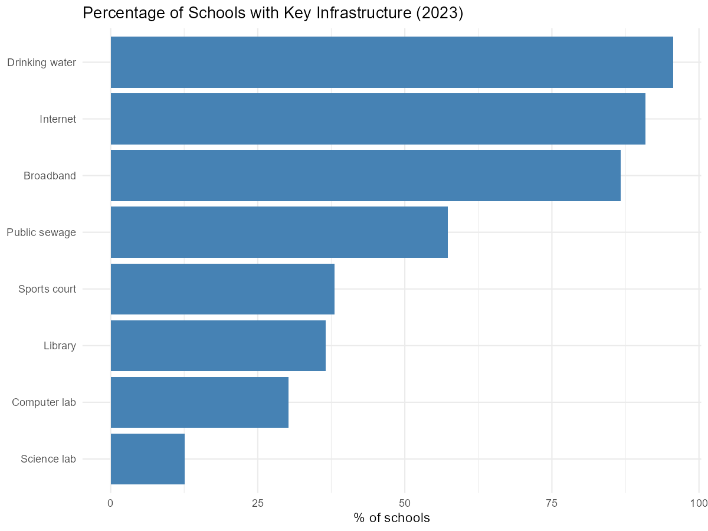
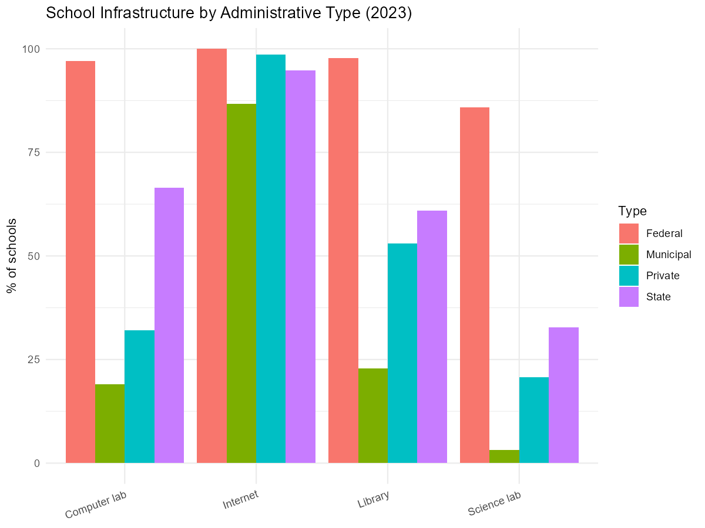
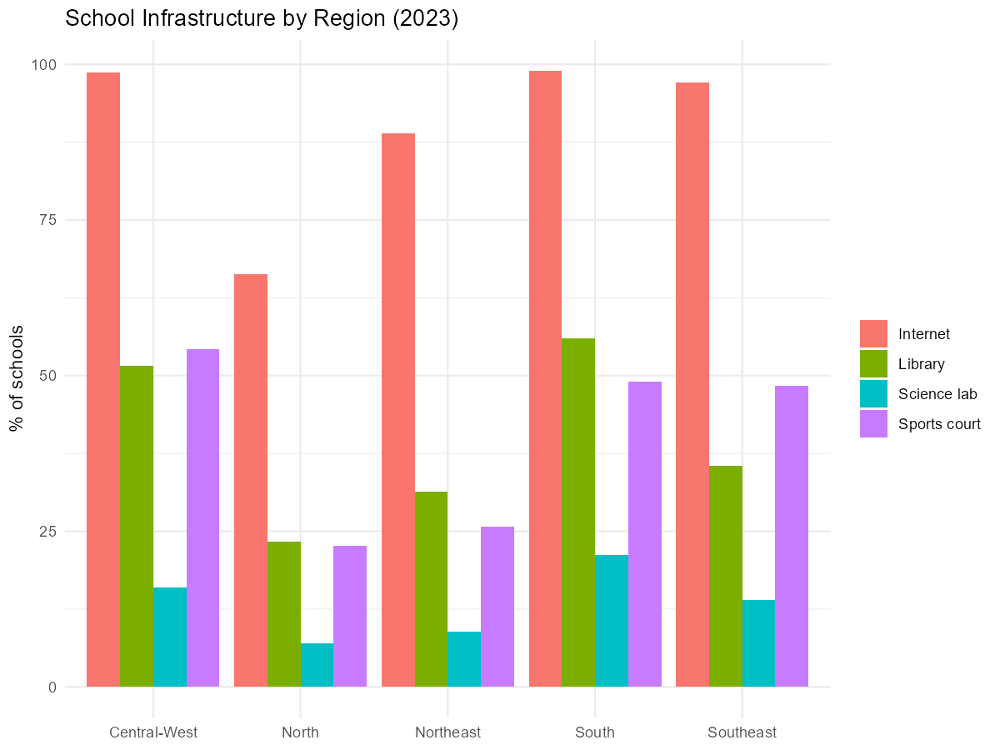
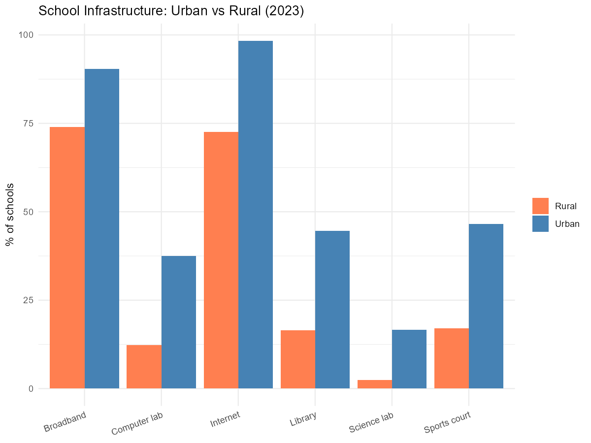
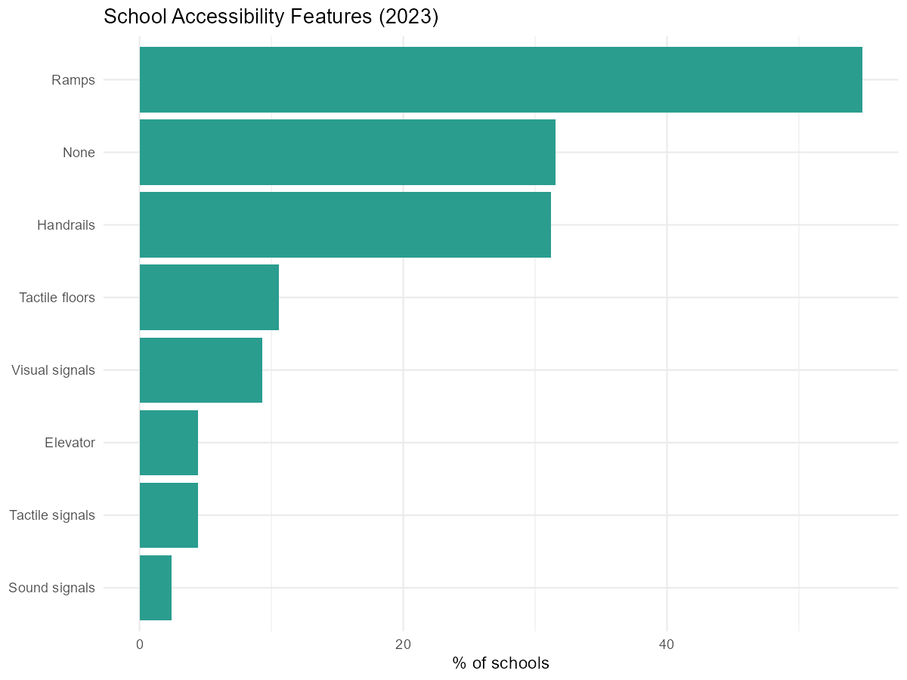
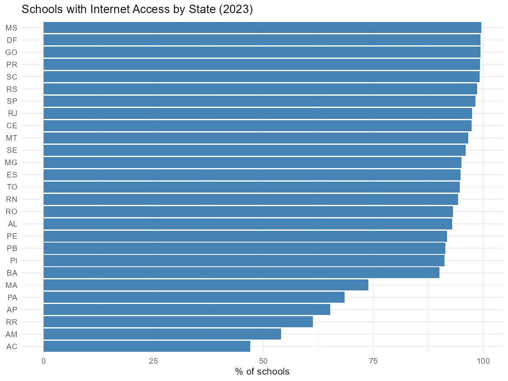

What does school infrastructure look like across Brazil?
Source:vignettes/school-infrastructure.Rmd
school-infrastructure.RmdThis vignette shows how to use educabR to explore school infrastructure across Brazil using the School Census. We look at internet access, libraries, science labs, sports courts, and accessibility features – and how they vary by region, administrative type, and location.
Downloading School Census data
The School Census contains one row per school (~217,000 schools in 2023) with over 400 variables covering infrastructure, staffing, and programs.
# Download all schools for 2023
escolas <- get_censo_escolar(year = 2023)
# Or filter by state for faster exploration
escolas_sp <- get_censo_escolar(year = 2023, uf = "SP")Note: the full national file is about 30 MB compressed. When filtering by state, all rows are read before filtering, so the first call may take a moment.
Overview: key infrastructure indicators
The School Census uses binary columns (1 = yes,
0 = no) for each infrastructure item. Let us compute the
percentage of schools that have each resource nationwide.
indicators <- c(
"in_internet",
"in_banda_larga",
"in_biblioteca",
"in_laboratorio_informatica",
"in_laboratorio_ciencias",
"in_quadra_esportes",
"in_agua_potavel",
"in_esgoto_rede_publica"
)
infra_summary <-
escolas |>
summarise(across(all_of(indicators), ~ mean(. == 1, na.rm = TRUE) * 100)) |>
pivot_longer(everything(), names_to = "indicator", values_to = "pct") |>
mutate(
label = c(
"Internet", "Broadband", "Library", "Computer lab",
"Science lab", "Sports court", "Drinking water", "Public sewage"
)
)
ggplot(infra_summary, aes(x = reorder(label, pct), y = pct)) +
geom_col(fill = "steelblue") +
coord_flip() +
labs(
title = "Percentage of Schools with Key Infrastructure (2023)",
x = NULL,
y = "% of schools"
) +
theme_minimal()
Infrastructure by administrative type
Federal, state, municipal, and private schools have very different
resource levels. The tp_dependencia column encodes the
administrative type.
admin_labels <- c(
"1" = "Federal",
"2" = "State",
"3" = "Municipal",
"4" = "Private"
)
infra_admin <-
escolas |>
mutate(admin = admin_labels[as.character(tp_dependencia)]) |>
group_by(admin) |>
summarise(
Internet = mean(in_internet == 1, na.rm = TRUE) * 100,
Library = mean(in_biblioteca == 1, na.rm = TRUE) * 100,
`Computer lab` = mean(in_laboratorio_informatica == 1, na.rm = TRUE) * 100,
`Science lab` = mean(in_laboratorio_ciencias == 1, na.rm = TRUE) * 100,
.groups = "drop"
) |>
pivot_longer(-admin, names_to = "resource", values_to = "pct")
ggplot(infra_admin, aes(x = resource, y = pct, fill = admin)) +
geom_col(position = "dodge") +
labs(
title = "School Infrastructure by Administrative Type (2023)",
x = NULL,
y = "% of schools",
fill = "Type"
) +
theme_minimal() +
theme(axis.text.x = element_text(angle = 20, hjust = 1))
Regional inequality
Northern and Northeastern states typically have fewer resources than the South and Southeast. Grouping by region reveals the gap.
region_labels <- c(
"Norte" = "North",
"Nordeste" = "Northeast",
"Sudeste" = "Southeast",
"Sul" = "South",
"Centro-Oeste" = "Central-West"
)
infra_region <-
escolas |>
mutate(region = region_labels[no_regiao]) |>
group_by(region) |>
summarise(
Internet = mean(in_internet == 1, na.rm = TRUE) * 100,
Library = mean(in_biblioteca == 1, na.rm = TRUE) * 100,
`Science lab` = mean(in_laboratorio_ciencias == 1, na.rm = TRUE) * 100,
`Sports court` = mean(in_quadra_esportes == 1, na.rm = TRUE) * 100,
.groups = "drop"
) |>
pivot_longer(-region, names_to = "resource", values_to = "pct")
ggplot(infra_region, aes(x = region, y = pct, fill = resource)) +
geom_col(position = "dodge") +
labs(
title = "School Infrastructure by Region (2023)",
x = NULL,
y = "% of schools",
fill = NULL
) +
theme_minimal()
Urban vs rural schools
The tp_localizacao column distinguishes urban (1) from
rural (2) schools. The infrastructure gap between them is one of the
starkest in Brazilian education.
infra_location <-
escolas |>
mutate(
location = ifelse(tp_localizacao == 1, "Urban", "Rural")
) |>
group_by(location) |>
summarise(
Internet = mean(in_internet == 1, na.rm = TRUE) * 100,
Broadband = mean(in_banda_larga == 1, na.rm = TRUE) * 100,
Library = mean(in_biblioteca == 1, na.rm = TRUE) * 100,
`Computer lab` = mean(in_laboratorio_informatica == 1, na.rm = TRUE) * 100,
`Science lab` = mean(in_laboratorio_ciencias == 1, na.rm = TRUE) * 100,
`Sports court` = mean(in_quadra_esportes == 1, na.rm = TRUE) * 100,
.groups = "drop"
) |>
pivot_longer(-location, names_to = "resource", values_to = "pct")
ggplot(infra_location, aes(x = resource, y = pct, fill = location)) +
geom_col(position = "dodge") +
scale_fill_manual(values = c("Urban" = "steelblue", "Rural" = "coral")) +
labs(
title = "School Infrastructure: Urban vs Rural (2023)",
x = NULL,
y = "% of schools",
fill = NULL
) +
theme_minimal() +
theme(axis.text.x = element_text(angle = 20, hjust = 1))
Accessibility features
The School Census tracks specific accessibility features. The
in_acessibilidade_inexistente flag marks schools with no
accessibility at all.
access_cols <- c(
"in_acessibilidade_rampas",
"in_acessibilidade_corrimao",
"in_acessibilidade_elevador",
"in_acessibilidade_pisos_tateis",
"in_acessibilidade_sinal_sonoro",
"in_acessibilidade_sinal_tatil",
"in_acessibilidade_sinal_visual",
"in_acessibilidade_inexistente"
)
access_labels <- c(
"Ramps", "Handrails", "Elevator", "Tactile floors",
"Sound signals", "Tactile signals", "Visual signals", "None"
)
access_summary <-
escolas |>
summarise(across(all_of(access_cols), ~ mean(. == 1, na.rm = TRUE) * 100)) |>
pivot_longer(everything(), names_to = "feature", values_to = "pct") |>
mutate(label = access_labels)
ggplot(access_summary, aes(x = reorder(label, pct), y = pct)) +
geom_col(fill = "#2a9d8f") +
coord_flip() +
labs(
title = "School Accessibility Features (2023)",
x = NULL,
y = "% of schools"
) +
theme_minimal()
Internet access by state
A per-state view highlights which states are lagging behind in digital connectivity.
internet_uf <-
escolas |>
group_by(sg_uf) |>
summarise(
pct_internet = mean(in_internet == 1, na.rm = TRUE) * 100,
.groups = "drop"
) |>
arrange(pct_internet)
ggplot(internet_uf, aes(x = reorder(sg_uf, pct_internet), y = pct_internet)) +
geom_col(fill = "steelblue") +
coord_flip() +
labs(
title = "Schools with Internet Access by State (2023)",
x = NULL,
y = "% of schools"
) +
theme_minimal()